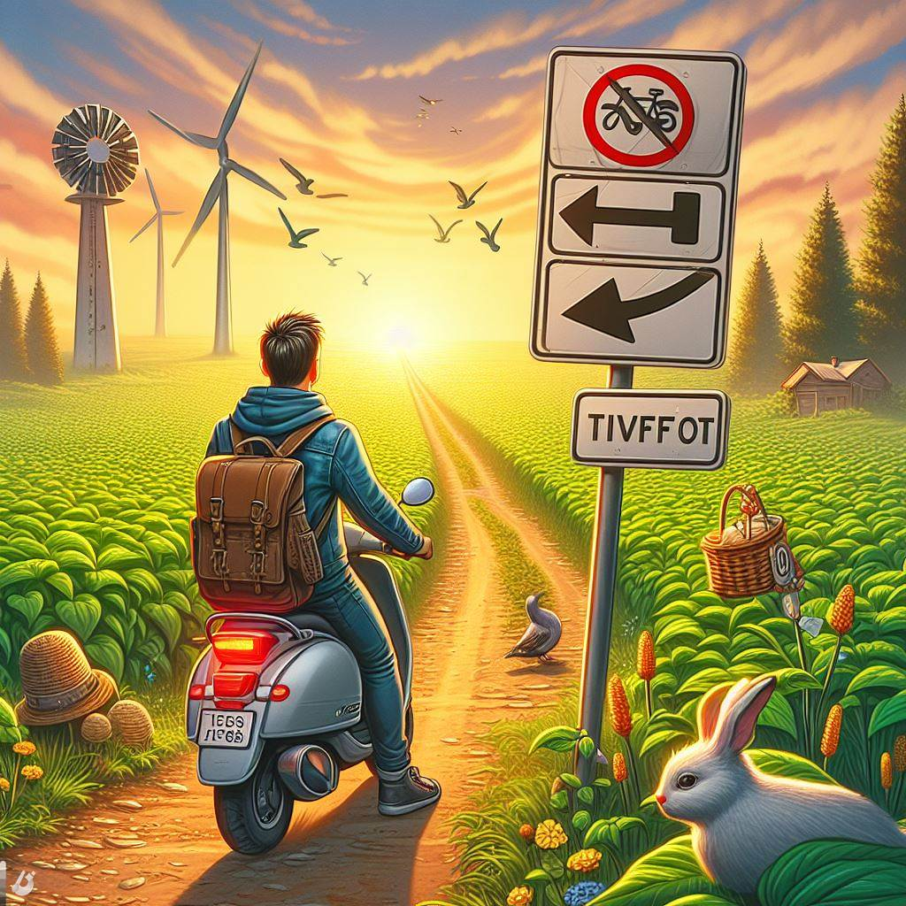

20 августа, 2005

Итак, я уже проехал 1200 миль
и побывал в некоторых интересн
местах: Вала-Вала, штат Вашингтон, Мэджик-Сити, штат Айдахо,
Баунтифул, штат Юта, Лэст Чане, штат Колорадо, Уай, штат
Аризона, штат Нью-Мексико.
14 июля 2005
 Я видел парочку знаков в стиле Burrna Shave на обочине
дороги: «Если вы не заметите проезжаюшие мимо машины, то
они могут сбить вас. Одно мгновение -
и бесконечность ... »
Я определенно не хотел, чтобы на меня наехала машина!
Я видел парочку знаков в стиле Burrna Shave на обочине
дороги: «Если вы не заметите проезжаюшие мимо машины, то
они могут сбить вас. Одно мгновение -
и бесконечность ... »
Я определенно не хотел, чтобы на меня наехала машина!
2 июня 2005

Первый день моего путешествия! Я не верю, что наконец смог отложить
все дела в сторону и отправиться в путешествие. Поскольку я
собирался ехать на скутере, то не мог взять с собой много вещей:
только сотовый телефон, iPod,
цифровую камеру и шоколадный батончик.
Только все самое необходимое. Как сказал бы Лао-Цзы:
«Путешествие
на тысячу миль начинается с одного шага к скутеру»
.